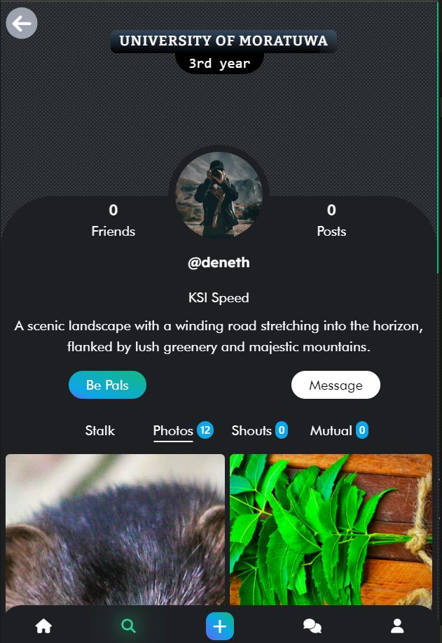

UniLink (beta)
A social networking platform for university students and lecturers to share ideas, collaborate and communicate.

Overview
UniLink was built to give university communities a dedicated space to share ideas and collaborate, separate from general-purpose social platforms. Students and lecturers can post, discuss and connect around academic and campus life.
The backend runs on Express.js with a MySQL data store, while real-time features (notifications, live discussion updates) are handled over WebSockets. Authentication uses JWT to keep sessions stateless and scalable.
This was one of my earliest full-stack projects, and it's where I first worked through the real-world tradeoffs of session management, real-time updates, and relational schema design at a 'real users' scale rather than a toy example.
Key Features
- 01React front end with a component-driven UI for posts, profiles and discussions
- 02Express.js REST API backed by a MySQL relational schema
- 03Real-time updates and notifications via WebSockets
- 04JWT-based authentication for stateless, scalable sessions